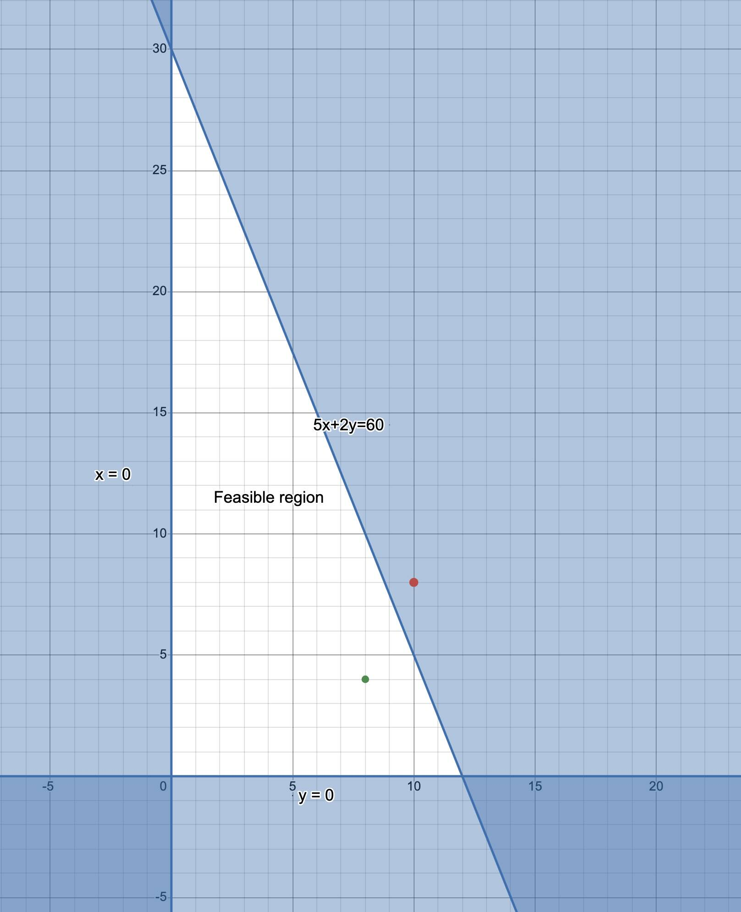
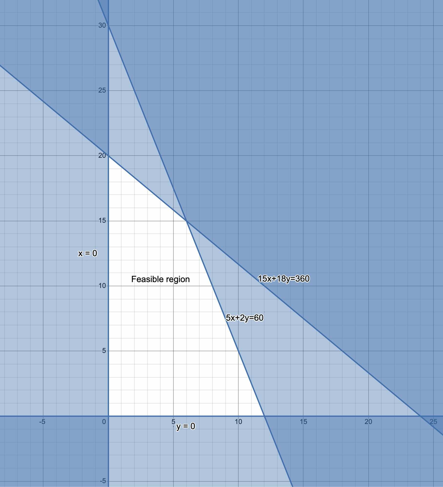

3 Linear Programming
3.1 Introduction to linear Programming
Managers are often called upon to make complicated decisions. For example, production managers often make decisions on what products to manufacture and in what quantities. In making such decisions, the manager must consider the available resources and how to utilize them for maximum profit. Note that resources are not limited to raw materials. They can include labor (human hours), farmland, machinery, etc. Resources, in general, are always limited and management must decide how to allocate them in order to get the maximum possible profit.
Linear programming (LP) is one of the most important methods used in management science to solve problems of the kind describe above. LP involves maximizing or minimizing a quantity, usually profit or cost, under some given constraints.
3.2 Mixture Problems & Charts
A mixture problem is a problem which includes combining limited resources to manufacture products that will generate maximum profit for the company.
These problems are common because most products that we use involve combining multiple resources in their production. Although there are other considerations in making production decisions, availability of resources is on of the most important constraints.
An optimal production policy (OPP) is a policy that,
(i) does not violate the constraints under which the comany operates and,
(ii) gives maximum profit.Example 1
A toy manufacturer can manufacture only skateboards and, only dolls, or some kind of skateboards and dolls. Skateboards require 5 units of plastic and can be sold for a profit of $ 1, while dolls require 2 units of plastic and can be sold for $0.55 profit. Only 60 units of plastic are available.
- Make a mixture chart to model this situation.
- What numbers of skateboards and/or dolls should the company make to maximize profit?
Before we solve this problem, note that it is a mixture problem because:
Definite resources are available in limited quantities. The resource here is container units of plastic.
Definite products can be made by combining (mixing) the resources. The products here are skateboards and dolls.
Solution
- A mixture is a simple table that shows the resources, products, and profit. The chart displays the “verbal” information into a format that makes it easier to convert the problem to mathematical form (equations) that we can then solve it. The rows of the mixture chart contain the products while the columns contain the resources and the profit margin. See below:
| Products | Resource(s): Containers of plastic: 60 |
Profit |
|---|---|---|
| Skateboard (x units) |
5 | $ 1.00 |
| Dolls (y units) |
2 | $ 0.55 |
To solve this problem, we will have to follow a series of steps which include:
- Translating the problem into a mathematical form,
- Identifying a set of possible solutions (feasible region) and,
- Identifying a solution that would give us maximum profit, i.e., the optimal b production policy.
There are several methods solving linear programming problems. We will start with the geometric method, then look at the simplex method, and finally MS excel. We will talk about the pros and cons of each method.
3.3 The Geometric Method
The geometric method of solving linear programming problems involves creating a graph to visualize the feasible region (the set of likely solutions) and then identifying a solution from the feasible region.
A feasible set (region) for an LP problem is the collection of all physical
possible solution choices that can be made. 3.3.1 Convering Mixture Chart into Mathematical Form
First, we know that the we cannot manufacture negative number of objects (skateboards of dolls). So, negative numbers are not permitted in this context. Note however, that 0 is a possible number. Thus, we have two inequalities;
\[x \ge 0 \hspace{.04in} \text{and} \hspace{.04in} y \ge 0\]
The symbol \(>\) means grater than while \(\ge\) means greater than or equal to.
We call the above two inequalities minimum constraints because they tell us the minimum that we can have for each object.
Since we have a limited supply of resources (in this case 60 units of plastic) we must also have inequalities for resource constraints. Since we need 5 units of plastic to manufacture ONE skateboard, we will need \(5x\) units to manufacture x units of skateboards. Similarly, we will need \(2y\) units of plastic to manufacture y dolls. In total, we need \(5x+2y\) units of plastic to manufacture the dolls and skateboard. This value must not exceed 60. Thus, we have the inequality,
\[5x+2y\le60\]
Notice that this time, we use the symbol for less than or equal to.
In this problem, we only have 3 inequalities but in a realistic problem, there would be hundreds or even thousands of them.
The last step in formulating the mathematical model is to make the objective function. This is the the function that connects the profit to the resources. Since we know that each skateboard results in $1.00 profit, we know that x dolls will result in a profit of \(\$1x\) and y dolls will result in a profit of \(\$0.55x\). We do not know what the profit is but we know it is a function of both dolls and skateboards. We can denote the profit as \(P\). So, we have the equation,
\[P=1x+0.55y\] Notice that the objective function is an equation (not inequality) that gives a specific amount of profit as we vary the number of skateboards and dolls. In other words, \(P\) changes as we change \(x\) and \(y\). So we can determine the value of \(x\) and\(y\) that would produce maximum \(P\).
3.3.2 Representing the Feasible Region
After creating the inequalities from the mixture chart, we can draw a helpful picture to help us visualize the feasible region geometrically. Graphs are the most commonly used tools for visualizing the feasible region.
Notice that all the three inequalities (i.e., the minimum and resource constraints) are linear in the sense that when you graph them (assuming an equal sign) you will get a straight line. To take care of the fact that the inequalities admit a broad range of values, we,
- Use a dotted line if the inequality is strictly less \((<)\) or greater \((>)\) and shade the region representing the constraints. For example, \(x>0\), represents the \(y-axis\) so we draw a dotted line there and shade the right side of the line (i.e., values for which \(x>0\).
- Use a bold line if the inequality allows equality (e.g., \(x\ge0\)). In this case, we would draw the same line as (a) above but without dotting it (i.e, a continuous line.
Below is a graph of the feasible region for our problem above
All points within the region labelled “feasible region” are possible solution to our problem in the sense that they do not violate the constraints. For example, if we take the point \((8,4\) as the solution, the company would need to manufacture 8 skateboards and 4 dolls We can use the profit function to compute the profit associated with this choice as follows:
\[\begin{align} P&=x+0.55y\\ &=8+(0.55\times 4)\\ &=\$10.20 \end{align}\]
Although this solution does not violate the constraints, it is easy to show that there is another point that would yield a higher profit while still obeying the constraints. Take, for example, the point \((2,14)\) which means 2 skateboards and 20 dolls. The profit for this choice would be higher. See below:
\[\begin{align} P&=1.00 x+0.55y\\ &=2+(0.55\times 20)\\ &=\$13.0 \end{align}\]
Choosing the point in the feasible region that would result in maximum profit (optimal production policy) is not a trivial task. However, there is an genius technique known as The Corner Point Principle which we discuss next:
3.3.3 The Corner Point Principle
The corner point principle has been touted as one of the most important insights into the theory of linear programming. The principle states that,
In a linear programming problem, the maximum value for the profit formula always
corresponds to a corner point of the feasible region.For our linear programming problem above, there are three corners with cor=ordinates \((0,0)\), \((0,30\), and \((12,0)\). So, we can compute the profit associated with these 3 points and choose the highest as our optimal production policy:
For \((0,0)\), the profit would be \(\$0\).
For \((0,30\), the profit would be, \(P=1.00 (0)x+0.55(30)=\$16.5\)
For \((12,0\), the profit would be, \(P=1.00 (12)x+0.55(0)=\$12.00\)
Therefore, the optimal production policy would be to manufacture 0 skateboards and 30 dolls.
NOTE: In the real world, there would be a lot more corners which would make this process cumbersome. However, as you may have guessed, there are computer programs that can do the job faster and more efficiently than humans.
3.3.4 Summary of the Geometric Method
- Read the problem carefully to identify resources and products.
- Make a mixture chart for the problem.
- Assign an unknown quantities (often \(x\), and \(y\)) to each product and use the mixture chart to write the resource and minimum constraints.
- Write the profit formula as well.
- Create a feasible region by graphing ther inequalities (you can use a program such as Geogebra or Desmos).
- Find the coordinates of the corner points and evaluate the profit for each. The corner that gives maximum profit is the optimal production policy.
In the next example, we extend the toy problem above to include one more resource (person minutes). Read below:
Example 2
A toy manufacturer can manufacture only skateboards and, only dolls, or some kind of skateboards and dolls. Skateboards require 5 units of plastic and can be sold for a profit of $ 1, while dolls require 2 units of plastic and can be sold for $0.55 profit. Only 60 units of plastic are available. Furthermore, making one skateboard requires 15 person-minutes while making one doll requires 18-person minutes. There are only 360person person-minutes available.
- Make a mixture chart to model this situation.
- What numbers of skateboards and/or dolls should the company make to maximize profit?
Solution
- Below is the new mixture chart,
| Products | Resource 1: Plastic: 60 |
Resource 2: person-minutes 360 |
Profit |
|---|---|---|---|
| Skateboard (x units) |
5 | 15 | $ 1.00 |
| Dolls (y units) |
2 | 18 | $ 0.55 |
- We start by writing down the inequalities (constraints) and the profit function.
We still have the same minimum constraints as from example 1: \[x \ge 0 \hspace{.04in} \text{and} \hspace{.04in} y \ge 0\] For the resource constraints, we have two inequalities because we have two resources:
For the plastic, we have \[5x+2y\le60\]
For the person hours, we have, \[15x + 18y \le 360\]
The profit function stays the same: \[P=1x+0.55y\]
Next, we create a feasible region by graphing the inequalities. Notice that this new feasible region is smaller than the first and it has four corner points. The fourth point is as a result of the new inequality created by the additional resource constraints. As indicated earlier, the more resources you have, the more the corner points you expect.

The last step is to use the corner principle to find the optimal production policy: We check the profits for each of the corner:
For \((0,0)\), the profit would be \(\$0\).
For \((0,20\), the profit would be, \(P=1.00 (0)x+0.55(20)=\$11.00\)
For \((6,15\), the profit would be, \(P=1.00 (6)x+0.55(15)=\$14.50\)
For \((12,0\), the profit would be, \(P=1.00 (12)x+0.55(0)=\$12.00\)
Thus, in this new problem, the optimal production policy is 6 skateboards and 15 dolls for a maximum profit of $ 14.50.